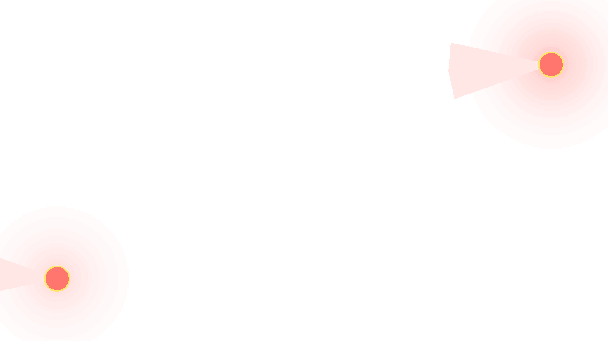

ディスコードの宣伝とは ／ 荒らし対策
SECURITY ／ 起きた時と、起きる前
順番どおりにやれば、
だいたい戻せます。
荒らされている最中は、何から手をつけるか分からなくなります。ここには起きた時の手順と、起きる前の備えを、順番のまま置いてあります。上から読んでください。
いま起きている人へ
-
1
まず、投稿を止める
犯人を探すのは後です。該当チャンネルの低速モードを上げるか、@everyone の発言権限を一時的に外します。流れが止まるだけで、被害は増えなくなります。
-
2
招待リンクを止める
外から増え続けている場合、招待リンクを無効にします。既に配られたリンクも失効させてください。増える元を止めないと、何度でも来ます。
-
3
監査ログを見る
サーバー設定の監査ログに、誰が何をしたかが残っています。90日で自動的に消えるので、必要な部分はこの時点で控えておいてください。
-
4
対処する
該当アカウントをBANします。権限を渡していた相手なら、先に権限を外してからBANしてください。順番が逆だと、外す前に何かされます。
-
5
戻す
止めた権限と低速モードを元に戻します。消されたチャンネルやロールは、サーバーテンプレートを作ってあれば同じ構成を作り直せます。会話そのものはDiscordの仕組みでは戻りません——ここは正直に書いておきます。
目次 ／ CONTENTS
被害の大きさは、渡した権限の大きさで決まる
荒らしの被害は、相手の技術ではなくこちらが渡していた権限で決まります。発言しかできない相手にできるのは、荒れた発言までです。チャンネルを消せる権限を渡していれば、チャンネルが消えます。
渡しすぎていないか
「手伝ってくれるから」と管理権限を渡した相手が、後で変わることがあります。権限は、その人がいま必要な分だけで足ります。足りなければ後から足せますが、渡したものを消された後では戻せません。
BANとキックの違い
キックは退出させるだけです。招待リンクを持っていれば戻ってこられます。BANは再入場を止めます。繰り返し来る相手にはBANが要ります。
どちらも相手のアカウントそのものは消えません。別のアカウントを作られたら、また来られます。だから根本の対策は、入ってすぐ荒らせない状態にしておくことです。
起きる前にやっておくこと
認証レベルを上げる
サーバー設定の認証レベルを上げると、作ったばかりのアカウントや電話番号未登録のアカウントが発言できなくなります。Botを入れる前に、まずここです。元から付いている機能で、費用もかかりません。
低速モードを入れておく
雑談チャンネルに数秒の低速モードを入れておくだけで、連投が物理的にできなくなります。普段の会話にはほとんど影響しません。
サーバーテンプレートを作っておく
Discordにはサーバーテンプレートという機能があります。いまのチャンネル構成とロールを1本のリンクとして保存でき、そこから同じ構成のサーバーを作り直せます。費用も道具も要りません。設定を変えたら作り直しておいてください。
文章と画像は、手元にも置いておく
ルール文・お知らせ・固定メッセージの本文そのものを、手元のメモにも残しておいてください。消されても貼り直せます。絵文字とアイコンの元画像も同じです。サーバーの中にしか無いものは、消えた時に作り直せません。
対策Botは、いつ入れるか
人が少ないうちは要りません。認証レベルと低速モードで足ります。人が増えて手が回らなくなってから考えてください。
Botを入れる時は、そのBotに渡す権限も同じ話です。全権限を渡す必要があるBotは、乗っ取られた時に全部やられます。

宣伝で人が増えた後に来るもの
荒らしは、人が増えてから来ます。宣伝がうまくいった後に必ず通る道なので、増える前に権限を絞っておくほうが楽です。
増えた後に慌てて権限を見直すと、その時点で既に渡した相手が残っています。
よくある質問
荒らしが来たらまず何をすればいいですか？
犯人を探す前に、投稿を止めてください。低速モードを上げるか、@everyone の発言権限を一時的に外します。流れが止まってから監査ログを見ます。
荒らし対策のBotは必要ですか？
人が少ないうちは、認証レベルと低速モードで足ります。Botを入れる前に、権限を渡しすぎていないかを先に見てください。
荒らされる前にできることはありますか？
権限を渡す人を絞ることです。被害の大きさは、渡していた権限の大きさで決まります。あわせてサーバーテンプレートを作っておくと、構成だけは作り直せます。